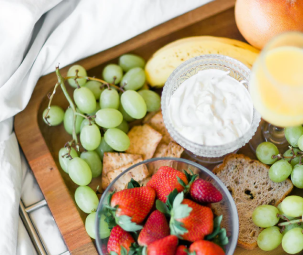

Factors influencing nutritional requirements
Sports nutrition is the study and practice of nutrition and diet with regards to improving anyone's athletic performance. Nutrition is an important part of many sports training regimens, being popular in strength sports (such as weightlifting and bodybuilding) and endurance sports (e.g. cycling, running, swimming, rowing). Sports nutrition focuses its studies on the type, as well as the quantity of fluids and food taken by an athlete. In addition, it deals with the consumption of nutrients such as vitamins, minerals, supplements and organic substances that include carbohydrates, proteins and fats.